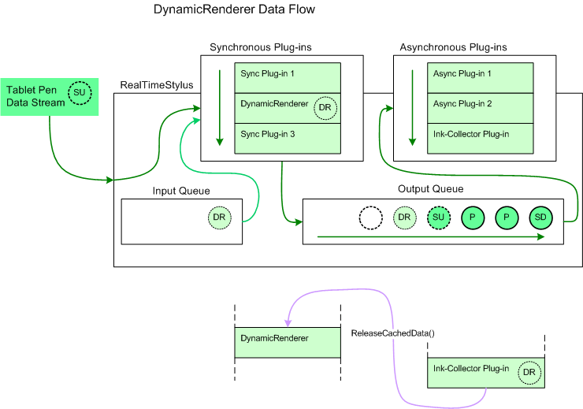

A dynamic-renderer plug-in is an object that displays the tablet pen data in real-time as it is being handled by the RealTimeStylus object. Later, for events such as a form refresh, the dynamic-renderer plug-in or an ink-collector plug-in may redraw the ink.
The RealTimeStylus object implements the IStylusSyncPlugin interface. The DynamicRenderer object renders the ink in real-time, as it is being drawn. When the Refresh method is called while the DynamicRenderer object is enabled, the DynamicRenderer object redraws the stroke currently being collected. The DynamicRenderer object's Enabled property is initially set to FALSE.
[!Note]
When calling the DynamicRenderer object's Refresh method from within a Paint event handler in managed code, set the DynamicRenderer object's ClipRectangle property to the PaintEventArgs object's ClipRectangle property.
Â
The DynamicRenderer object can temporarily cache ink data. To use this feature in managed code, set the EnableDataCache property to TRUE. When the DynamicRenderer object receives a call to its IStylusSyncPlugin.StylusUp method, it caches the stroke data and adds custom stylus data to the Input queue in response to the StylusUpData object for the stroke. The CustomStylusData object's CustomDataId property is set to the DynamicRendererCachedDataGuid value, and the CustomStylusData object's Data property contains a DynamicRendererCachedData object. Call the DynamicRenderer object's ReleaseCachedData method once the stroke has been collected and can be statically rendered. When the Refresh method is called while the DynamicRenderer object is enabled, the DynamicRenderer object redraws all strokes that are cached. When the DataCacheEnabled property is set to false, the cached stroke data is deleted.
The following diagram illustrates how the DynamicRenderer object adds data to the tablet pen data when the DynamicRenderer object's DataCacheEnabled property is set.

In this diagram the circle lettered "SD" represents a StylusDown object and the circles lettered "P" represent Packets objects that have already been added to the RealTimeStylus object's output queue and that have not yet been sent to the asynchronous plug-in collection. The circle lettered "SU" represents a StylusUp object that the RealTimeStylus object is currently processing. It is sent to the synchronous plug-in collection and then placed on the output queue. The circles lettered "DR" represent custom stylus data that is added to the input queue by the DynamicRenderer plug-in in response to the stylus up notification associated with "SU". The custom stylus data lettered "DR" is then passed to the synchronous plug-ins and then to the output queue before the next tablet pen data is processed. The empty circle represents the position in the output queue where future tablet pen data is added. Also represented on the diagram is the ink-collector plug-in calling the DynamicRenderer object's ReleaseCachedData method to release the cached stroke data after the ink-collection plug-in has processed the stroke.
The following list describes other points to take into consideration when using the DynamicRenderer object.
You should not attach a DynamicRenderer object to more than one RealTimeStylus object. Once two RealTimeStylus objects to which the DynamicRenderer object is attached are enabled, the following occurs.
The RealTimeStylus object throws an exception when its AddCustomStylusDataToQueue method is called with the guid parameter set to the DynamicRendererCachedDataGuid globally unique identifier (GUID).
The DynamicRenderer object is implemented as a Component Object Model (COM) wrapper, and you cannot call its IStylusSyncPlugin interface methods directly. For more information about COM operation and the RealTimeStylus object, see Implementation Notes for the StylusInput APIs.
You can create your own dynamic-renderer plug-in by creating a synchronous plug-in that subscribes to the StylusDown, Packets, and StylusUp notifications. Your plug-in can then render the stroke as it is being drawn. This may be one way of implementing a selection tool that uses a free-form selection or selection box, for example.
Â
Â